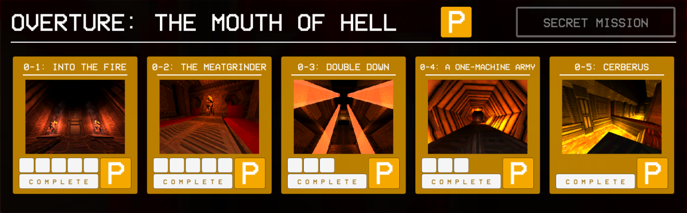

Hiiiii :3 I'm Miau. I like engineering and computers. I have somewhat of an obsession with factorio at 1500+ hours played in 3 years. I am also learning German and Japanese on Duolingo.
Welcome home pookie!
Website Journal
5/22/2025
 AAAAAAAA look! :3333
3/25/2025
Hey hey people, I have updated my factorio hours up top (1300->1500), which is currently at 1561 hours.
I updated the cgit stylesheet to fix some color issues, such as the code being black text on a dark gray background.
I sent my all of the programs I made while doing Harvard's cs50 course to my git page.
2/6/2025
I have wanted to host my website myself for a while now, and I finally got to it and started following LandChad's course on how to 'Start a website'
- Started renting a small debian server from Vultr
- Connected my domain 'almightymiau.gay' to the server's IP
- Set up nginx on the server, which serves the website to people
- Got https certification set up with Certbot (it's free! wow!)
- Set up a cronjob to automatically renew the certificate
- Cloned my website onto the webserver from github
- Set up a cronjob to automatically update the website from github every 12 hours
- Installed rsync on server and laptop (didnt do much with it)
- Set up SSH keys from laptop to vps :3
- Installed dnsmasq (havent done anythign else for it)
- Read about Monero, I'm interested but haven't done anything yet
- Set up Wireguard VPN on vps, connected laptop, FAILED
2/8/2025
- Set up git system on main website
- Set up cgit, a git web interface, available at git.almightymiau.gay
- Pushed Bitburner.git, Odin-recipes.git, Odin-landing.git (all of my important/neat repos to server)
- Didn't like the light mode that comes with cgit, so I found a dark theme online, and put the stars background on it.
- I'll change more of the git page's style sometime, but there's a lot to go through in there.
Added the button to go to my git page on the sidebar. There isn't a link back here from there tho.
1/12/2025
Today I did some pondering (I sat outside on my couch for an hour after getting an hour of sleep) on the relationship betweeen pay, effort, and skill of jobs. I started out with a disconnect between the physical effort of a job and how well it pays, such as the difference between physical labor (I think of farming) and office work. I do realize that the development of a skill should correspond to an increased pay, but it still feels weird to me that there's an inverse correlation between the physical effort of a job and how well it pays. (I beleive high level skills (doctors, artisans) should be rewarded for their abilities, its just that office work feels strange to me)
I also added a picture of "Chad" to Cats
11/25/2024
I finished my playthrough of the Factorio mod Space Exploration, and started adding pictures of my factory to Factorio.
I don't think I'm finishing it tonight because my eyes are already closing
10/24/2024
I added two pictures of my Factorio Space Exploration factory to the Factorio page.
10/23/2024
woa not neglected this time
I added megidolaon's button to the side bar
added 4 stamps and 10 stickers to silly
thats it :3
10/20/2024
AAAAAAAAAAAAAAAAAAAAAAA I neglected my child again
I am here today to add a new feature to the SILLY page, so that when you click/hover over the PISS sticker, it will change the background to that sticker. :3
I am planning on adding a bunch of stuff to the Factorio page, but i haven't gotten around to it bc it sounds like a lot of work :(
I am also going to add a list and pictures to the Cats page
I've been in my first actual semester of college for the past 2 months, which is part of why I haven't been working on this. I really enjoy my comp sci class, even though I should probably be in a higher level class. If I could, I would only do this class (computers :3). I am also in a calculus 1 class, most of which I already learned in high school :/. My art appreciation class is quite interesting, learning about different paints, how they're made, what they excel in, etc. I really don't like my english class and I can't wait until I don't have to take any more.
:3
ok 2 hours later and I have added background effects to some of the stamps and stickers. (I don't think all of them need/deserve it) When you click on a sticker, for example the one that says piss, it will toggle that image as the background. The set of backgrounds at the bottom use a different method that I completely stole from sadgrl, which will have a preview of a background while you hover your cursor over it.
It is 4:23 am and I am quite eepy ¦| goodnight
8/7/2024
⤑ Tried using python with flask to simplify adding new pages, but it didn't work out :(
⤑ Added a new page called Silly
⤑ Added a bunch of stamps and buttons to Silly
⤑ Finally added art to Art. I have drawings of my cat Sassy, Adeptus Mechanicus artwork, memes I drew during math class, a marker tattoo I made a while ago, and some digital art
⤑ Fixed tab titles, added a metadata description, and added a tab favicon
8/1/2024
Wow it's already been a month and I haven't done anything on here.
⤑ I finished my first college course recently. I had CIS-1A, an introduction to computer systems and microsoft office. It was pretty easy and I can't wait to start my fall term. I'm gonna have C++ programming, Calculus I, English comp, and Art appreciation.
⤑ I made a new page today that I've been thinking about adding for a week now: Breakthroughs. I want a place where I can just put down my thoughts.
⤑ The supervisor of a summer program I've gone to for a few years suggested a scholarship I should apply for, along with giving me a letter of recomendation. I started the application process today, but got too tired half way through
7/5/2024
The first version of my personal website, made for the Harvard CS50 class. I'm making this personal site to learn HTML/CSS, and because I love how creative people are with their personal websites. I also don't like social media and this just feels better.